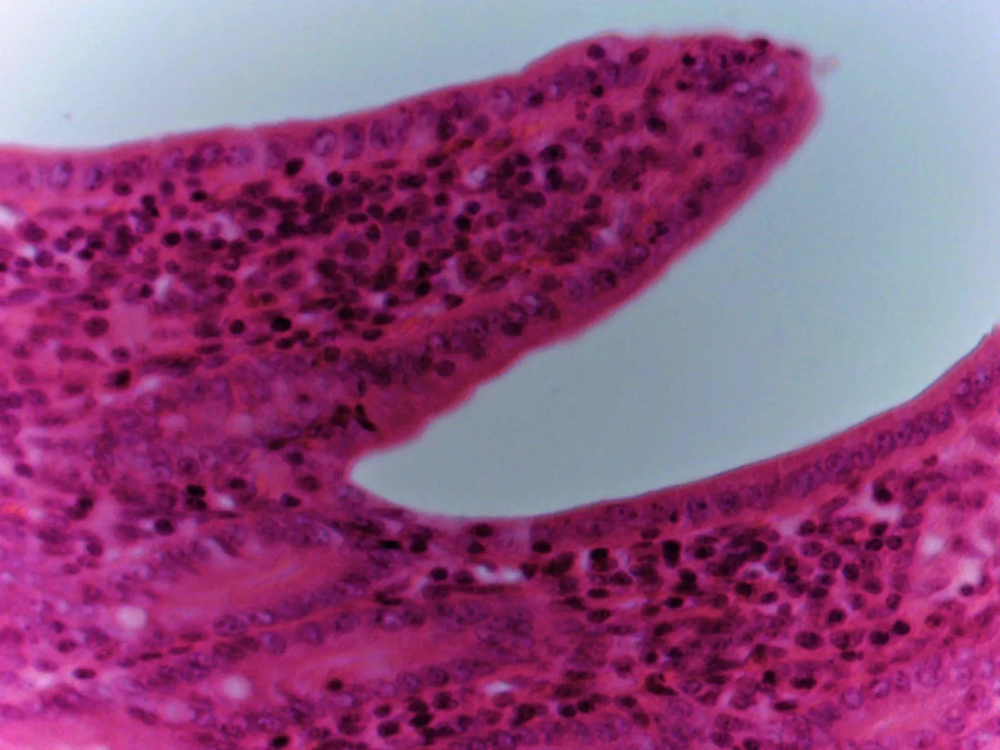
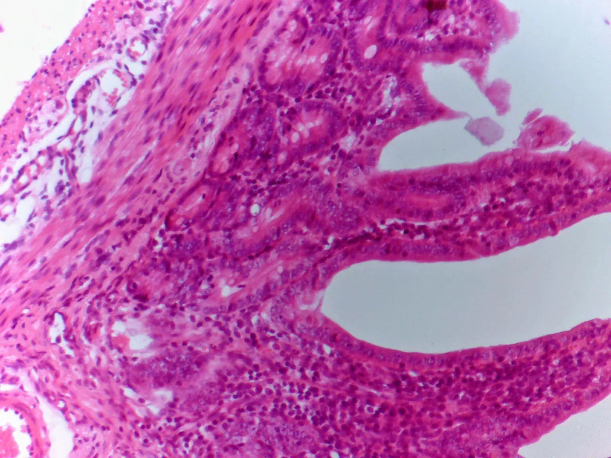

Lâmina 47 · Sistema digestório
Jejuno



Toque na imagem para ampliar. No computador, use as setas do teclado para trocar de imagem.
Lâmina 47 · Sistema digestório


Toque na imagem para ampliar. No computador, use as setas do teclado para trocar de imagem.